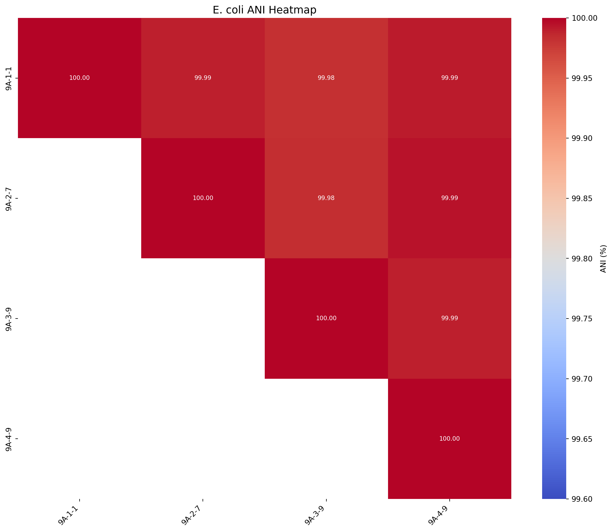
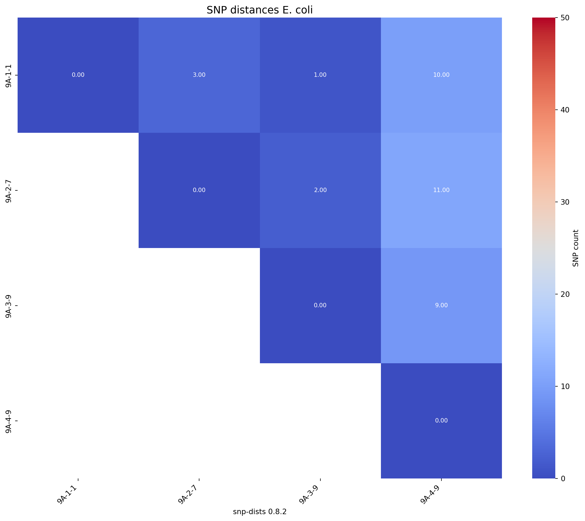

# Install libraries as necessary
#pip install openpyxl
#pip install pandas
#pip install matplotlib
#pip install seaborn
#pip install numpy
#import importlib.metadataANI and SNP distance matrices
Introduction
This tutorial will take n genome sequences and run algorithms to determine average nucleotide idenitities (ANI) and core genome single nucleotide polymorphisms (SNPs), visualising the distances as heatmaps in python.
This workflow uses fastANI for ANI, snippy and snp-dists for SNP distances, and seaborn and matplotlib in python to visualise the distances as heatmaps. For any analysis in bash it uses the conda package manager so make sure you have that installed.
Part 1 - Loading sequence data
Download files with wget
# 9A-1-1
wget "https://ftp.ncbi.nlm.nih.gov/genomes/all/GCF/026/119/875/GCF_026119875.1_ASM2611987v1/GCF_026119875.1_ASM2611987v1_genomic.fna.gz"
# 9A-2-7
wget "https://ftp.ncbi.nlm.nih.gov/genomes/all/GCF/026/119/895/GCF_026119895.1_ASM2611989v1/GCF_026119895.1_ASM2611989v1_genomic.fna.gz"
# 9A 3-9
wget "https://ftp.ncbi.nlm.nih.gov/genomes/all/GCF/026/119/915/GCF_026119915.1_ASM2611991v1/GCF_026119915.1_ASM2611991v1_genomic.fna.gz"
# 9A-4-9
wget "https://ftp.ncbi.nlm.nih.gov/genomes/all/GCF/026/119/955/GCF_026119955.1_ASM2611995v1/GCF_026119955.1_ASM2611995v1_genomic.fna.gz"Unzip all files
gunzip *.fna.gz
Rename files to make data analysis easier
mkdir fastas
mv GCF_026119875.1_ASM2611987v1_genomic.fna fastas/9A-1-1.fasta
mv GCF_026119895.1_ASM2611989v1_genomic.fna fastas/9A-2-7.fasta
mv GCF_026119915.1_ASM2611991v1_genomic.fna fastas/9A-3-9.fasta
mv GCF_026119955.1_ASM2611995v1_genomic.fna fastas/9A-4-9.fasta
Part 2 - ANI matrix
2.1 - Calculating ANI with bash
We will be using fastANI with bioconda to determine ANI values for all of genomes compared against each other.
# conda create -n ANI_SNP_dists -y python=3.8
conda activate ANI_SNP_dists
conda install bioconda::fastaniMkae a new folder called ANI
mkdir ANICreate a list of fasta genomes to determine ANI
ls fastas/*.fasta > genomes.txt
cat genomes.txtCheck the list
cat genomes.txtFor ANI of all vs all run fastANI with all the genomes in your list.
Choosing the --matrix flag will output a matrix, this is what we will use to plot the heatmap
fastANI --ql genomes.txt --rl genomes.txt -o ANI/E_coli_ANI.tsv --matrixRename the output matrix
mv ANI/E_coli_ANI.tsv.matrix ANI/E_coli_ANI_matrix.tsv
sed 's|fastas/||g' ANI/E_coli_ANI_matrix.tsv > ANI/E_coli_ANI_matrix.tsv2.2 - Visualising ANI matrix with python
2.2.1: Install libraries
Next load the libraries
import pandas as pd
import matplotlib.pyplot as plt
import matplotlib as mpl
import seaborn as sns
import numpy as np2.2.2: Convert triangular matrix to full square matrix
Firstly we will covert the traingular matrix produced from fastANI to a full square matrix
# Load the file
with open("ANI/E_coli_ANI_matrix.tsv", "r") as f:
lines = f.readlines()
# Skip the first line (header)
lines = lines[1:]
# Strip whitespace
lines = [line.strip() for line in lines if line.strip()]
# Extract strain names from the leftmost column
strain_names = []
values = []
for line in lines:
parts = line.split("\t")
strain_names.append(parts[0])
values.append([float(x) for x in parts[1:]])
n = len(strain_names)
ani_matrix = np.zeros((n, n))
# Fill the lower triangle
for i in range(n):
for j in range(len(values[i])):
ani_matrix[i, j] = values[i][j]
ani_matrix[j, i] = values[i][j]
# Fill the diagonal with 100s
np.fill_diagonal(ani_matrix, 100)
# Create DataFrame
ani_df = pd.DataFrame(ani_matrix, index=strain_names, columns=strain_names)
# Remove ".fasta" from column names
ani_df.columns = ani_df.columns.str.replace(".fasta", "")
# Remove ".fasta" from index names
ani_df.index = ani_df.index.str.replace(".fasta", "")
# Display to confirm
print(ani_df.head()) 9A-1-1 9A-2-7 9A-3-9 9A-4-9
9A-1-1 100.000000 99.989120 99.981598 99.991730
9A-2-7 99.989120 100.000000 99.983719 99.994034
9A-3-9 99.981598 99.983719 100.000000 99.989388
9A-4-9 99.991730 99.994034 99.989388 100.0000002.2.3: Write a function to create the ANI heatmaps
Next we write a function which masks half the dataset to create a triangular heatmap, with the added functionality of rotating the heatmap
def plot_ani_heatmap(df, title="ANI Heatmap", rotation=0, lower_legend=95, upper_legend=100):
# Make a copy to avoid modifying the original
df_plot = df.copy()
# Apply rotation first
if rotation == 90:
df_plot = df_plot.transpose()
elif rotation == 180:
df_plot = df_plot.iloc[::-1, ::-1]
elif rotation == 270:
df_plot = df_plot.iloc[::-1, ::-1].transpose()
mask = np.zeros_like(df_plot, dtype=bool)
mask[np.triu_indices_from(mask, k=1)] = True # k=1 excludes the diagonal
if rotation == 90 or rotation == 270:
mask = np.transpose(mask)
elif rotation == 180:
mask = np.flip(mask)
plt.figure(figsize=(12, 10))
sns.heatmap(
df_plot,
annot=True,
fmt=".2f",
mask=mask,
cmap="coolwarm",
vmin=lower_legend,
vmax=upper_legend,
annot_kws={"size": 8},
xticklabels=df_plot.columns,
yticklabels=df_plot.index,
cbar_kws={"label": "ANI (%)"}
)
plt.xticks(fontsize=10, rotation=45, ha="right")
plt.yticks(fontsize=10)
plt.title(title, fontsize=14)
plt.tight_layout()
plt.show()2.2.4: Create the ANI heatmap
We will produce an ANI matrix for E. coli species types @Ec-ANI
# Call the function to create the heatmap
plot_ani_heatmap(df=ani_df, title="E. coli ANI Heatmap", rotation =90, lower_legend=99.6, upper_legend=100)
Part 3 - SNP distance matrix
3.1 - Calculating SNP distances with bash
We will determine SNP distances with snippy and snp-dists with 9A-1-1 as reference
We will activate the same conda environment used previously in section 2.1.
But here we will add more programs:
3.1.1: Download software
conda activate ANI_SNP_dists
conda install -c conda-forge -c bioconda -c defaults snippy
conda install -c bioconda -c conda-forge snp-dists
conda install bioconda::parallel3.1.2: Run Snippy
Use snippy to generate all SNPs.
Make a new directory
mkdir SNP_distsSet reference file for SNP calculations.
REF=9A-1-1.fastaUse sed to remove .fastq from .txt file
sed 's|fastas/||g' genomes.txt > genome_names.txt
sed -e 's/.fasta//' genomes_names.txt > genome_names.txtCheck the new .txt file containing list of genome names
cat genome_names.txtThe we use parallel on our list of genomes to run snippy:
cat genome_names.txt | parallel snippy --report --outdir SNP_dists/{}_snps --ref $REF --ctgs fastas/{}.fastaThis produces several files:
3.1.3: Run Snippy-core
Use snippy-core from snippy to generate core SNPs
snippy-core --ref $REF --outdir SNP_dists --prefix core SNP_dists/*_snpsThis produces several files:
core.full.aln: The full core genome alignment in FASTA format.core.aln: The core SNP alignment in FASTA format (only variable sites).core.tab: A table summarizing the SNP differences.
3.1.4: Generate a Pairwise SNP Distance Matrix
Once you have the core SNP alignment (core.aln), use snp-dists to calculate pairwise SNP distances.
snp-dists SNP_dists/core.aln > SNP_dists/snp_matrix.tsvThis will generate a pairwise SNP distance matrix (snp_matrix.tsv) where:
- Rows and columns correspond to isolates.
- The values represent the number of SNP differences between isolates
3.2 - Visualising SNP distance matrix with python
Make sure you have all the required libraries installed, if you need to install them see section 2.2.1
3.2.1: Read and clean the data
# Read the SNP matrix with first column as row index
snp_df = pd.read_csv("SNP_dists/snp_matrix.tsv", sep="\t", index_col=0)
# Remove reference file
snp_df = snp_df.drop("Reference", axis=1)
snp_df = snp_df.drop("Reference", axis=0)
# Remove "_snps" from column names
snp_df.columns = snp_df.columns.str.replace("_snps", "")
# Remove "_snps" from index names
snp_df.index = snp_df.index.str.replace("_snps", "")
# Verify it loaded correctly
print(snp_df.head()) 9A-1-1 9A-2-7 9A-3-9 9A-4-9
snp-dists 0.8.2
9A-1-1 0 3 1 10
9A-2-7 3 0 2 11
9A-3-9 1 2 0 9
9A-4-9 10 11 9 03.2.2: Create a function which makes a SNP distance heatmap
def create_snp_heatmap(df, title="ANI Heatmap", rotation=0, lower_legend=95, upper_legend=100):
# Make a copy to avoid modifying the original
df_plot = df.copy()
# Apply rotation first
if rotation == 90:
df_plot = df_plot.transpose()
elif rotation == 180:
df_plot = df_plot.iloc[::-1, ::-1]
elif rotation == 270:
df_plot = df_plot.iloc[::-1, ::-1].transpose()
mask = np.zeros_like(df_plot, dtype=bool)
mask[np.triu_indices_from(mask, k=1)] = True # k=1 excludes the diagonal
if rotation == 90 or rotation == 270:
mask = np.transpose(mask)
elif rotation == 180:
mask = np.flip(mask)
plt.figure(figsize=(12, 10))
sns.heatmap(
df_plot,
annot=True,
fmt=".2f",
mask=mask,
cmap="coolwarm",
vmin=lower_legend,
vmax=upper_legend,
annot_kws={"size": 8},
xticklabels=df_plot.columns,
yticklabels=df_plot.index,
cbar_kws={"label": "SNP count"}
)
plt.xticks(fontsize=10, rotation=45, ha="right")
plt.yticks(fontsize=10)
plt.title(title, fontsize=14)
plt.tight_layout()
plt.show()3.2.3: Create the SNP distance heatmaps
Next we will produce an SNP distance matrix for E. coli species types @Ec-SNP
# Call the function to create the heatmap
fig_title = "SNP distances E. coli"
create_snp_heatmap(title=fig_title, df = snp_df, rotation=90, lower_legend=0, upper_legend=50)